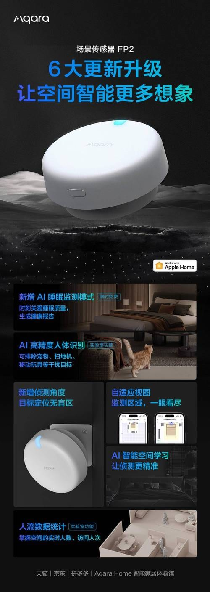

Aqara 人体传感器 FP2

Aqara 毫米波存在传感器，可检测静止人体存在，解决传统红外人体传感器「人不动灯就灭」的痛点。支持多区域划分与跌倒检测，适合卫生间、书房等空间做精细化灯光与空调自动化。
客观评测
Aqara FP2 采用 60GHz 毫米波雷达，通过微动检测判断人体存在，静止状态下也能持续上报，弥补传统 PIR 只检测移动的缺陷。检测距离约 8 米、视角约 120°（约），支持划分多个区域做独立联动，并具备跌倒检测。协议为 Wi-Fi，支持 Apple HomeKit 及主流语音平台，部分场景可经 Matter 接入（约）。供电为 USB-C 5V 持续供电，安装需靠近电源。
主观点评
FP2 解决了我家卫生间最大的痛点：以前坐在马桶上看手机，灯每两分钟就灭一次，现在人不动灯也一直亮着。区域划分是杀手锏，把洗手台和淋浴区分开，各自触发不同灯光，体验非常高级。装起来要考虑插座位置，调试灵敏度也花了半个晚上。隐私上纯雷达不含摄像头，家人不抵触。对智能家居玩家，这是提升幸福感最明显的传感器之一。
优点与不足
- 毫米波可检测静止存在，坐着看书灯不会突然灭
- 区域划分灵活，可按空间精细化自动化
- 无摄像头设计，隐私顾虑小
- 需 USB 持续供电，安装位置受电源限制
- 灵敏度需按环境调试，初上手有学习成本
参数规格
| 检测技术 | 60GHz 毫米波雷达 |
|---|---|
| 检测距离 | 约 8 米，视角约 120°（约） |
| 精度 | 可检测静止人体存在，支持跌倒检测（约） |
| 区域划分 | 支持多区域检测（最多约 30 个，约） |
| 协议 | Wi-Fi 2.4GHz，支持 HomeKit / Alexa / Google / Matter（约） |
| 供电 | USB-C 5V 持续供电，无电池 |
| 安装 | 桌面摆放、壁挂或顶装（约） |
| 联动 | 可联动灯光、空调、窗帘等自动化 |
| 视角 | 水平约 120°、垂直约 120°（约） |
| 隐私 | 雷达检测不含摄像头，识别本地完成（约） |
| 刷新 | 检测响应速度较快（约 1 秒内，约） |
| App | Aqara Home 设置区域与灵敏度 |